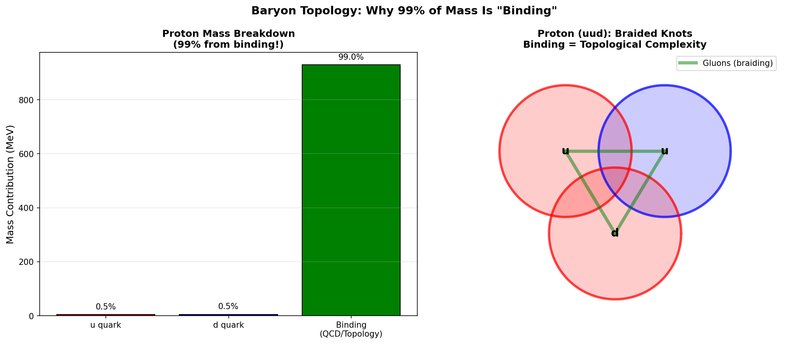

Abstract
Protons contain three quarks (uud) with total mass ~9 MeV, yet the proton mass is 938 MeV. Where does 99% of the
mass come from? Standard answer: QCD binding energy. TARDIS interpretation: baryons are braided
knots, and the braiding complexity provides the extra ~100 effective crossings that explain the
mass.
In TARDIS, quarks are trefoil knots (3 crossings each). A baryon is not just 3 separate knots but a
braided structure where gluons act as the braiding strings, adding ~100 effective crossings.

Figure 1: Left: Mass breakdown of proton (99% from binding). Right: Schematic of
braided knot structure (uud quarks connected by gluonic braids).
3. Conclusion
Binding Energy = Braiding Complexity
QCD confinement is topological necessity in TARDIS.
References
Yang, Y. & Zou, B. S. (2020). Origin of nucleon mass. PRD.
Fulber, D. H. M. (2025). Topological Matter. ToE Project.